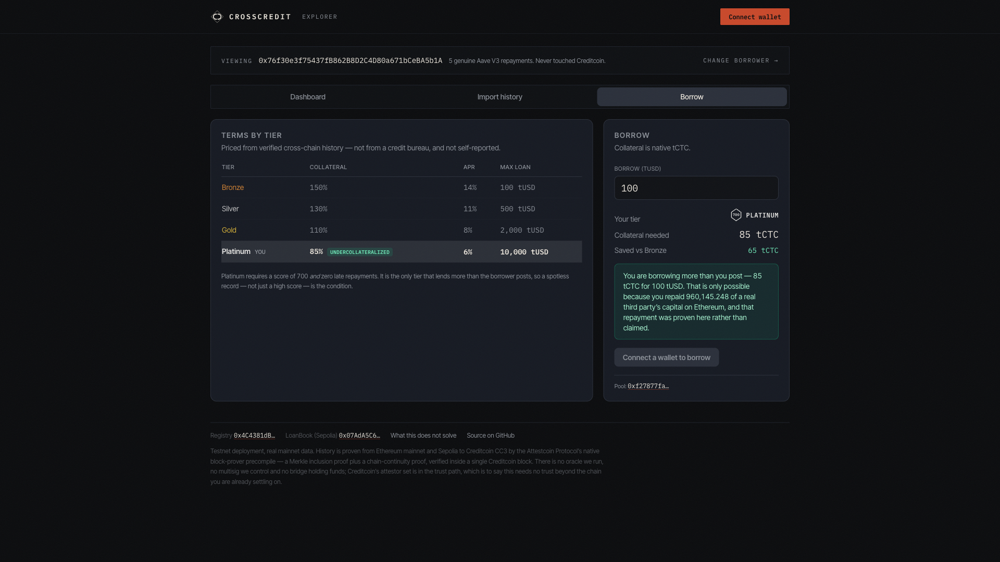
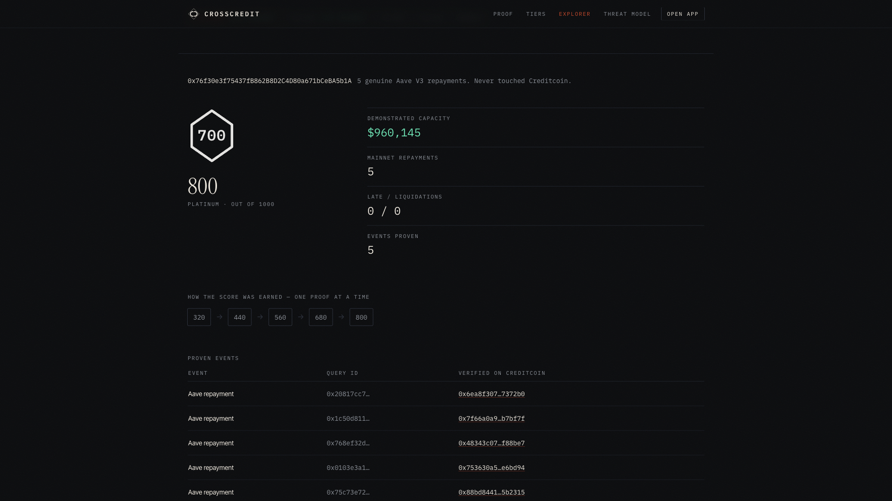

Cross-chain credit reputation and lending on Creditcoin,
priced on proof rather than trust.
crosscredit.vercel.app · github.com/OoJae/crosscredit
BUIDL CTC 2026 Fall · live on Creditcoin CC3 testnet
A wallet with years of Aave repayments on Ethereum arrives on every other chain as a stranger — and posts $1,500 to borrow $1,000.
Not because the lender doubts that history. Because it cannot read that chain. Collateral stands in for information that already exists and is already provable.
The usual fixes swap evidence for a promise — a scorer's off-chain API, or unsecured lending on stated creditworthiness. Maple lost $36M that way; Goldfinch wrote off ~$18M.
The Attestcoin Protocol (USC) puts a block-prover precompile inside the Creditcoin EVM: a Merkle inclusion proof says the transaction is in the block, a continuity proof says the block is really on Ethereum, and the precompile checks both — synchronously, inside one CC3 block.
No oracle we run. No bridge holding funds. The attestor network is Creditcoin's own consensus, not our multisig.
The finding that became the project
CC3 attests Ethereum mainnet as chainKey 3, beside Sepolia's 1 — we found it in neither the docs nor the examples.
So the evidence can be real: unaffiliated Aave V3 history from a protocol whose capital was genuinely at risk — not events we issued to ourselves.


| Primitive | How we use it |
|---|---|
| verifyAndEmit · single | main ingest, via vendored USCBase (pinned @4ff9a3bf) |
| verifyAndEmit · batch | ≤10 proofs on one shared continuity proof — no example exercises it. Ceiling confirmed at the precompile: 10 verifies, 11 reverts |
| verify · read-only | free pre-flight: previewIngest names the failing guard before any signature; dryRunBatch staticCalls a whole batch |
| calculateTxIndex | replay id — keccak(chainKey, height, txIndex) |
| EvmV1Decoder | external library, delegatecall — so we deploy our own build |
| ChainInfo 0x…0fd3 | getSupportedChains, attested heights |
Five checks after every proof
Creditcoin exists to put credit history on-chain for borrowers the formal system cannot see — years of real lending records across Africa and Southeast Asia prove the model.
CrossCredit generalises it: reputation earned anywhere becomes collateral-relief here. The score is computed inside the EVM that verified the evidence — deterministic, eight constants, no owner-tunable weights, no off-chain model.
| Revenue | Mechanism |
|---|---|
| Origination fee | basis points on every loan the registry prices |
| Rate spread | tier-priced lending pool — Platinum at 85% collateral is the acquisition hook |
| Registry reads | third-party pools querying scoreOf / demonstratedCapacity for their own terms |
The tier sets the rate. The credit line above collateral is capped by the largest single repayment proven to a real third-party protocol.
Twelve open items are disclosed in docs/THREAT_MODEL.md — what is unsolved is written down next to what is.
Built from Aug 13 for BUIDL CTC 2026 Fall — contracts, worker, frontend, film and this deck by one builder. Everything user-facing runs against the real precompile on live CC3; nothing in the demo path is mocked.
The ask: CEIP fast-track — funding the audit and the first external lending pool on Creditcoin mainnet.
live crosscredit.vercel.app
code github.com/OoJae/crosscredit
docs docs/ATTESTCOIN_INTEGRATION.md
registry 0x4C4381dB…Dddf81 · CC3